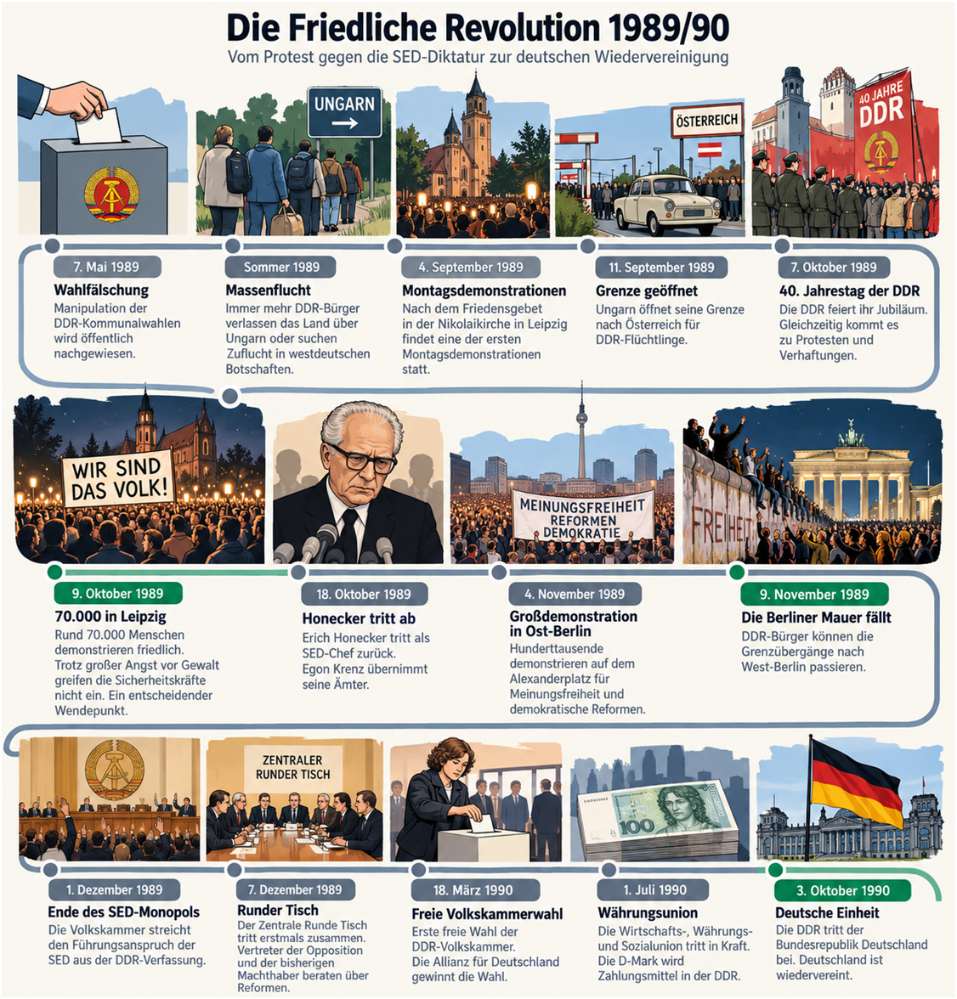

Die Friedliche Revolution 1989/90
B1 · Interaktive Übungen zur historischen Timeline

Sehen Sie sich die Timeline genau an. Bearbeiten Sie anschließend die drei Übungen.
1. Lückentext: Was geschah 1989/90?
Setzen Sie die passenden Verben aus der Wortbox in der richtigen Form ein. Jedes Verb wird nur einmal verwendet.
2. Wichtige Ereignisse zuordnen
Was geschah wann? Wählen Sie zu jeder Frage das passende Ereignis. Jede Antwort passt nur einmal.
3. Typische Nomen-Verb-Verbindungen
Ergänzen Sie das passende Verb im Infinitiv. Wählen Sie aus der Wortbox.